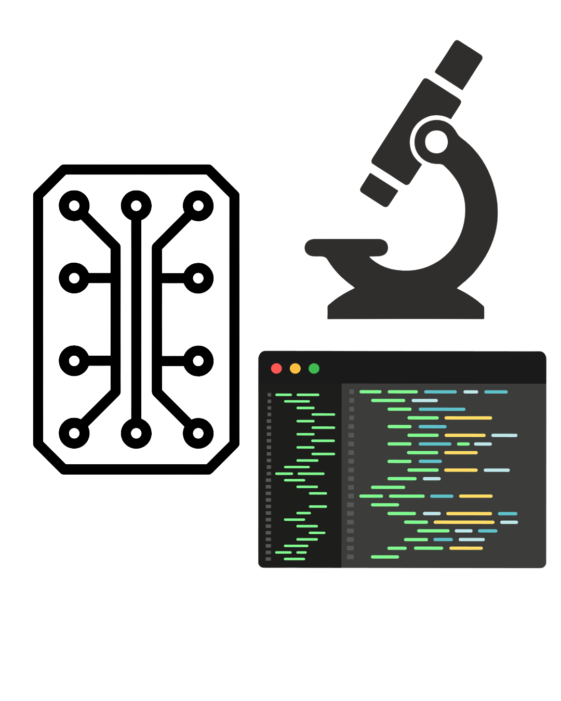

Abigail Pickrel
Major: Biomedical Engineering
Minor: Chemistry, Political Science
Digital Portfolio — Undergraduate work, 2023–2027.
Coded By Abbey Using Visual Studio Code
%20-%20Abigail%20Pickrel.PNG)

Major: Biomedical Engineering
Minor: Chemistry, Political Science
Digital Portfolio — Undergraduate work, 2023–2027.
Coded By Abbey Using Visual Studio Code

I have had the opportunity to showcase my research at conferences such as BMES and ACS through poster presentations and lightning talks. I have also presented at the Annual Focus on Creative Inquiry (FoCI) and EUREKA! Poster Forums at Clemson University.
View Project
Throughout my time at Clemson, I have had the opportunity to step into many roles that have helped shaped my creativity, that I now bring to engineering and research, mentorship skills, and confidence taking on leadership.
View Project
Through my campus involvement, I have been an active member in my community, grown closer with my peers at Clemson, and stepped into spaces and roles that have challnged my abilities and enabled me to grow as a person and student.
View Project.jpg)
Featured on this page are the skills and projects that I believe showcase my design abilities, creativity, and drive to learn new skills and apply them to tangible products.
View Project
This page includes a little more information about my personal interests, hobbies, and what qualities I believe shape my unique perspective in engineering and research, as well as make me a well rounded student and worker.
View ProjectEmail: apickre@g.clemson.edu, abbeygpickrel@gmail.com
Contact Me